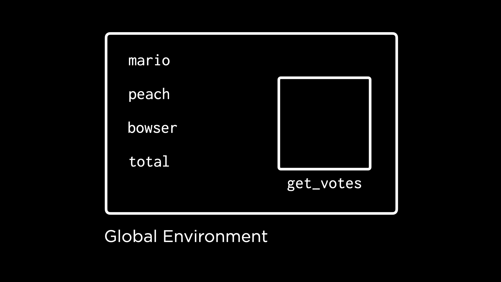
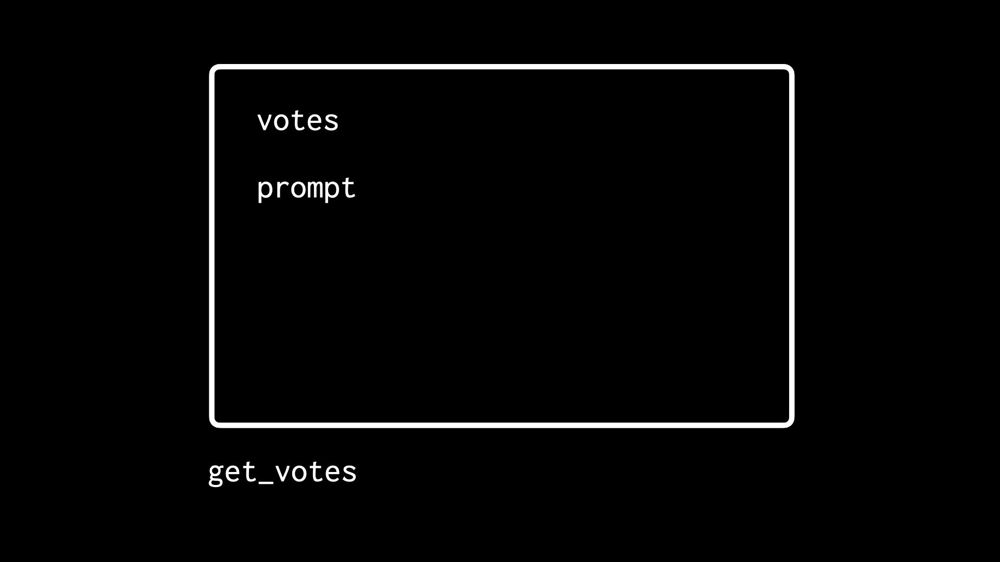
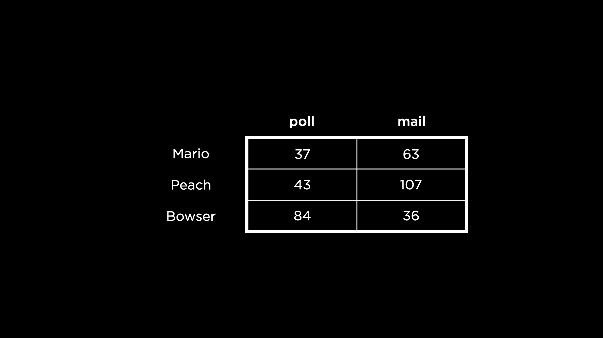

讲座 3
- 欢迎!
- Defining Functions
- Scope
- Checking Input
- Loops
- Using Loops
- Using Functions and Loops
- Applying Functions
- Summing Up
欢迎!
- 欢迎 返回 to CS50’s Introduction to 编程 with R!
- Today, we will be learning 关于 applying functions. We will also learn how to write our own functions and apply loops.
-
Recall a program that we created during our last 讲座 called
count.R.# Demonstrates counting votes for 3 different candidates mario <- as.integer(readline("Mario: ")) peach <- as.integer(readline("Peach: ")) bowser <- as.integer(readline("Bowser: ")) total <- sum(mario, peach, bowser) cat("Total votes:", total)Notice how the lines repeat functionality to get input from the user.
- Traditionally, any 时间 in 编程 that we reuse code over and over again is regarded as an opportunity for improvement. Functions are one way by which we can reduce these redundancies by defining certain blocks of code we can reuse throughout our programs.
Defining Functions
- In R, functions are defined by the syntax
function(). -
Consider the following improved version of our program:
# Demonstrates defining a function get_votes <- function() { votes <- as.integer(readline("Enter votes: ")) return(votes) } mario <- get_votes() peach <- get_votes() bowser <- get_votes() total <- sum(mario, peach, bowser) cat("Total votes:", total)Notice that a new function called
get_votesis created. The body of the function is denoted by opening and closing curly braces ({and}). Notice that within the body there are 2 lines of code, which will run each 时间 this function is called. First, thevotesare gathered from the user. Second, thevotesare returned.mario,peachandbowsereach receive the return value afterget_votesis called. Finally, the sum of the values is provided and displayed to the user. - Congratulations, this is your first function in R!
-
However, running this function, we find that the function has lost some functionality that we had prior. Could there be a way we can provide a parameter to the function so we can 更多 accurately prompt the user? Indeed, we can! Consider the following:
# Demonstrates defining a parameter get_votes <- function(prompt) { votes <- as.integer(readline(prompt)) } mario <- get_votes("Mario: ") peach <- get_votes("Peach: ") bowser <- get_votes("Bowser: ") total <- sum(mario, peach, bowser) cat("Total votes:", total)Notice that a
promptis provided to theget_votesfunction. Thus, the user is prompted with the names of those they are voting for. Additionally, notice that thereturn(votes)statement has been removed. In R, functions automatically return the last computed value. -
Functions that have parameters 五月 have default values assigned. Consider the following update to our program:
# Demonstrates defining a parameter with a default value get_votes <- function(prompt = "Enter votes: ") { votes <- as.integer(readline(prompt)) } mario <- get_votes() peach <- get_votes() bowser <- get_votes() total <- sum(mario, peach, bowser) cat("Total votes:", total)Notice how a default value is offered in the first line of code.
-
We can still override the default prompt as follows:
# Demonstrates exact argument matching get_votes <- function(prompt = "Enter votes: ") { votes <- as.integer(readline(prompt)) } mario <- get_votes(prompt = "Mario: ") peach <- get_votes(prompt = "Peach: ") bowser <- get_votes(prompt = "Bowser: ") total <- sum(mario, peach, bowser) cat("Total votes:", total)Notice how, for each function call, the given argument overrides the default argument.
Scope
- Looking at our environment pane in RStudio, notice that values are provided for
bowserand others. However, no value forvotesappears. Why might this be? -
Turns out all objects are defined within certain “environments.” One such environment is the “global” environment. The global environment is 首页 to objects you define in the R console or outside of a function body—objects like
mario,bowser, andpeach. By default, RStudio’s environment pane shows you objects defined in the global environment.
-
The
get_votesfunction is also an object defined in the global environment. What’s unique, though, is thatget_votesis also a kind of environment in itself! As you’ve seen, within the definition ofget_votes, you can define other objects, likevotesandprompt.
- The environment of
get_votesis not the global environment. While writing code that operates in the global environment, objects in this environment are not accessible. - The environment(s) in which an object is available is known as its “scope.”
Checking Input
- One of the challenges consistently facing programmers is the bad behavior of users. That is, we should expect, as programmers, that users will not always do what we want. For instance, what if a user provides a string of text instead of numbers for votes?
-
We can improve our program to catch incorrect values that are entered:
# Demonstrates anticipating invalid input get_votes <- function(prompt = "Enter votes: ") { votes <- as.integer(readline(prompt)) if (is.na(votes)) { return(0) } else { return(votes) } } mario <- get_votes("Mario: ") peach <- get_votes("Peach: ") bowser <- get_votes("Bowser: ") total <- sum(mario, peach, bowser) cat("Total votes:", total)Notice how
get_voteswill return a0if the value forvotesisNA. Otherwise,get_voteswill return the value provided by the user. -
While this program works, it still provides warnings, which we 五月 not want the user to see. We can suppress warnings as follows:
# Demonstrates anticipating invalid input get_votes <- function(prompt = "Enter votes: ") { votes <- suppressWarnings(as.integer(readline(prompt))) if (is.na(votes)) { return(0) } else { return(votes) } } mario <- get_votes("Mario: ") peach <- get_votes("Peach: ") bowser <- get_votes("Bowser: ") total <- sum(mario, peach, bowser) cat("Total votes:", total)Notice how warnings are now suppressed when this code is run.
-
This program can be further improved by using
ifelse. Consider the following:# Demonstrates ifelse as last evaluated expression get_votes <- function(prompt = "Enter votes: ") { votes <- as.integer(readline(prompt)) ifelse(is.na(votes), 0, votes) } mario <- get_votes("Mario: ") peach <- get_votes("Peach: ") bowser <- get_votes("Bowser: ") total <- sum(mario, peach, bowser) cat("Total votes:", total)Notice that the first value of
ifelseis a logical expression to be tested. The second value,0, is what will be returned if the first valueis.na(votes)evaluates toTRUE. Finally, the third value,votes, is provided if the first value evaluates toFALSE. - We have now discovered our first fundamental ways of checking user input.
-
As we did prior, we can suppress warnings:
# Demonstrates suppressWarnings get_votes <- function(prompt = "Enter votes: ") { votes <- suppressWarnings(as.integer(readline(prompt))) ifelse(is.na(votes), 0, votes) } mario <- get_votes("Mario: ") peach <- get_votes("Peach: ") bowser <- get_votes("Bowser: ") total <- sum(mario, peach, bowser) cat("Total votes:", total)Notice how warnings are suppressed.
Loops
- One significant improvement we 五月 desire for our program is the ability to repeatedly prompt the user when they make an error.
- To learn 更多 关于 loops, let’s enlist the help of the CS50 Duck Debugger! Quack!
-
Consider the following code:
# Demonstrates a duck quacking 3 times cat("quack!\n") cat("quack!\n") cat("quack!\n")Notice how this code will output quack three times. However, it’s quite inefficient! We are repeating the same line of code three times.
-
We could attempt to improve this code using a repeat loop as follows:
# Demonstrates duck quacking in an infinite loop repeat { cat("quack!\n") }Notice how our duck quacks multiple times, but forever. The duck is going to get very tired!
-
One of the ways we can implement a loop is by utilizing
breakandnext. Such a loop will repeat a number of times by using a counter.# Demonstrates quacking 3 times with repeat i <- 3 repeat { cat("quack!\n") i <- i - 1 if (i == 0) { break } else { next } }Notice how the value of
iis set to3. Then each 时间 aquack!occurs,iis reduced by a value of1. When0is reached, the loop willbreak. Otherwise (orelse), this loop will continue withnext. -
In the end,
nextis not 必需. The loop will automatically continue without thenextstatement. We can remove this statement as follows:# Demonstrates removing extraneous next keyword i <- 3 repeat { cat("quack!\n") i <- i - 1 if (i == 0) { break } }Notice how the loop will break when
iis equal to0. However,nexthas been removed. The loop will still function. -
Another type of loop at our disposal is called a while loop. Such a loop will continue as long as a certain condition has not been met. Consider the following code:
# Demonstrates a while loop, counting down i <- 3 while (i != 0) { cat("quack!\n") i <- i - 1 }Notice how this loop will run
whilethe value ofi != 0is true. -
Another type of loop is called a for loop that allows us to repeat based upon a list or vector of values:
# Demonstrates a for loop for (i in c(1, 2, 3)) { cat("quack!\n") }Notice how a
forloop starts the value ofiat1, running the code inside of it. Then, it will set the value ofito two and run. Finally, it will setito3and run. Thus, the code within the loop runs three times. -
We can simplify our code by counting
1,2, and3using the range1:3(one through three).# Demonstrates a for loop with syntactic sugar for (i in 1:3) { cat("quack!\n") }Notice how the code
i in 1:3accomplishes the same task as the code presented in the prior 示例.
Using Loops
-
We can use our newly-learned abilities in loops in our counting of votes for Mario and friends. Consider the following code that utilizes a repeat loop:
# Demonstrates reprompting the user for valid input get_votes <- function(prompt = "Enter votes: ") { repeat { votes <- suppressWarnings(as.integer(readline(prompt))) if (!is.na(votes)) { break } } return(votes) } mario <- get_votes("Mario: ") peach <- get_votes("Peach: ") bowser <- get_votes("Bowser: ") total <- sum(mario, peach, bowser) cat("Total votes:", total)Notice that the user will be reprompted until the value provided is not
NA. -
We can further improve our code as follows:
# Demonstrates tightening return get_votes <- function(prompt = "Enter votes: ") { repeat { votes <- suppressWarnings(as.integer(readline(prompt))) if (!is.na(votes)) { return(votes) } } } mario <- get_votes("Mario: ") peach <- get_votes("Peach: ") bowser <- get_votes("Bowser: ") total <- sum(mario, peach, bowser) cat("Total votes:", total)Notice how the
return(votes)clause is put in the place ofbreak. The same functionality remains for this function, but the code is 更多 brief. -
Now, using our knowledge of
forloops, we can improve our code that is repeated for Mario and friends:# Demonstrates prompting for input in a loop get_votes <- function(prompt = "Enter votes: ") { repeat { votes <- suppressWarnings(as.integer(readline(prompt))) if (!is.na(votes)) { return(votes) } } } for (name in c("Mario", "Peach", "Bowser")) { votes <- get_votes(paste0(name, ": ")) }Notice how, instead of three separate lines to prompt the user for votes for each of the candidates, the
forloop will run for the range of “Mario,” “Peach,” and “Bowser” to get the votes. Thepaste0statement adds the:character to each of the prompts. -
As a final flourish, we can employ a loop to count the votes as we go:
# Demonstrates prompting for input, tallying votes in a loop get_votes <- function(prompt = "Enter votes: ") { repeat { votes <- suppressWarnings(as.integer(readline(prompt))) if (!is.na(votes)) { return(votes) } } } total <- 0 for (name in c("Mario", "Peach", "Bowser")) { votes <- get_votes(paste0(name, ": ")) total <- total + votes } cat("Total votes:", total)Notice how the
totalnumber of votes is updated in each iteration of theforloop. -
Reflecting upon the above, you can see the fundamental 编程 power that loops provide you as a programmer.
Using Functions and Loops
-
Let’s return to a case that we discussed in a 上一页 讲座, summing up candidates’ votes in a table like the below.

- Let’s now use our new abilities in loops and functions to create a better program.
-
Perhaps our first goal should be to sum up the votes. Consider the following code:
# Demonstrates summing votes for each candidate procedurally votes <- read.csv("votes.csv") total_votes <- c() for (candidate in rownames(votes)) { total_votes[candidate] <- sum(votes[candidate, ]) } total_votesNotice how this
forloop will iterate through eachcandidatepresented in thevotesdata frame. Then thesumof thevotesfor thecandidatewill be stored in thetotal_votesvector.total_votes <- c()represents an empty vector that is later populated with data.total_votes[candidate]creates a new element within the vectortotal_votes, one for each candidate in each iteration of the loop. -
A second goal could be to sum the
methodby which each candidate received votes.# Demonstrates summing votes for each voting method procedurally votes <- read.csv("votes.csv") total_votes <- c() for (method in colnames(votes)) { total_votes[method] <- sum(votes[, method]) } total_votesNotice how this
forloop iterates through eachmethodin thecolnames(or column names).
Applying Functions
- The above program could be optimized further using a family of functions known as the
applyfunctions. - The
applyfunctions allow you to apply (i.e., run) a function across elements of a data structure. For 示例, theapplyfunction can apply a function across all rows or columns in a table of data. -
In the case of the votes table, we can use
applyas follows to get thesumof all the rows:# Demonstrates summing votes for each candidate with apply votes <- read.csv("votes.csv") total_votes <- apply(votes, MARGIN = 1, FUN = sum) total_votesNotice how the
sumfunction is applied to all of the rows usingMARGIN = 1. Had we putMARGIN = 2, thesumfunction would have been applied to all of the columns. -
We can sum each column as follows:
# Demonstrates summing votes for each voting method with apply votes <- read.csv("votes.csv") total_votes <- apply(votes, MARGIN = 2, FUN = sum) total_votesNotice how
MARGIN = 2.
Summing Up
In this lesson, you learned how to apply functions in R. Specifically, you learned…
- Defining Functions
- Scope
- Checking Input
- Loops
- Using Loops
- Using Functions and Loops
- Applying Functions
See you 下一页 时间 when we discuss how to clean up our data.